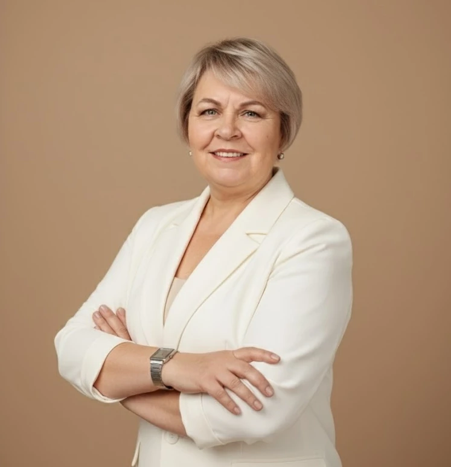
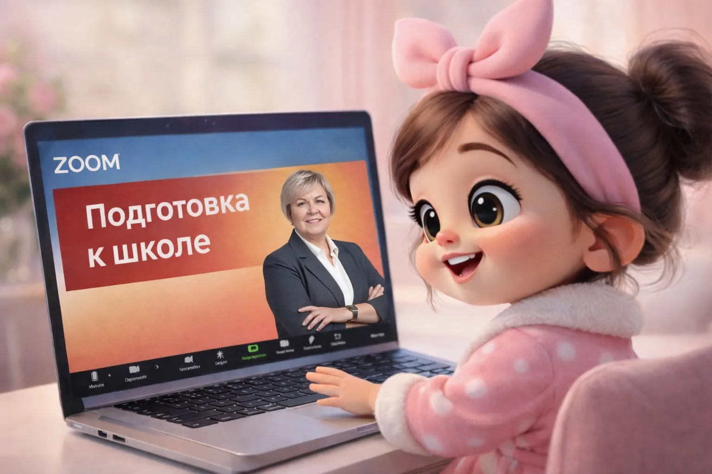

Подготовка к школе
для детей 6–7 лет · занятие 30 минут
- правильное и осознанное чтение
- устный счёт в пределах 10
- каллиграфия: красиво пишем цифры и печатные буквы
- знакомимся с элементами письменных букв
в группе от800 ₽индивидуально1 500 ₽
Репетитор начальных классов онлайн
Занимаюсь онлайн с дошкольниками и учениками 1–4 классов из любой страны — индивидуально и в группе

Узнаёте себя?
Начнём с бесплатной диагностики: посмотрю, что ребёнок уже умеет, и скажу, с чего начать
Чем занимаемся
Все занятия онлайн: подготовка к школе — 30 минут, школьники — 40 минут. В группе до 5 детей
для детей 6–7 лет · занятие 30 минут
в группе от800 ₽индивидуально1 500 ₽
сопровождаю по программе 1–4 классов
в группе от800 ₽индивидуально1 500 ₽
4 класс, русский язык и математика
в группе от800 ₽индивидуально1 500 ₽
Бесплатная диагностика
Онлайн, 30–40 минут, бесплатно
сколько лет ребёнку и что беспокоит
смотрю, что ребёнок уже умеет и где пробелы
30–40 минутрассказываю, что получается и какие проблемы нашли
сразу послепредлагаю, как исправить найденные проблемы, и маршрут по шагам

Кто будет заниматься с вашим ребёнком
Ольга Анатольевна Попова · учитель начальных классов высшей категории, высшее образование
Больше 30 лет работаю в начальной школе и знаю программу 1–4 классов изнутри.
На первом занятии смотрю, что ребёнок уже умеет, и строю программу от этого места: если есть пробелы за прошлые классы, закрываем их, не бросая текущую программу.
Занимаюсь онлайн — ребёнок учится дома, в привычной обстановке, а семья может жить в любой стране.
Что говорят родители
Настоящие отзывы родителей из ВКонтакте и с Авито — слова как есть
«Ходим на подготовку ко школе, примерно уже 4 месяца, ребенок начал меняться буквально на глазах после первого занятия. После первых занятий уже начали читать, а главное у нас появилось рвение читать все и везде. Хоидми на занятие с удовольствием, каждый раз узнает что то новое. Ольга Анатольевна оказала поддержку не только дошколятам, но и нам как родителям, помогает как объяснить ребёнку простыми словами. Спасибо большое Ольге Анатольевне за Ваш труд»
«Спасибо большое Ольге Анатольевне за терпение, с нашей не простой дочкой. Благодаря вам, много поменялась. Ребёнок с удовольствием к вам идёт на занятия. Проходя мимо магазинов сама озвучивает буквы, цифры. Ребёнок меняется на глазах. Спасибо ещё раз большое.»
«Ходим на подготовку к школе, читаем, да не просто читаем, а понимаем о чем, самостоятельно пишем слова на слух, ребенку очень нравится, ходит с большим удовольствием»
«Хочу выразить Вам искреннюю благодарность за то, что научили наших детей таблице умножения. … Благодаря Вашим усилиям и терпению, мы смогли освоить этот фундаментальный навык, который, несомненно, пригодится нам в будущем. …»
«Профессионал своего дела. Мы долго очень к ней ходили и учились считать и писать. Выучили с ней таблицу умножения»
«Очень довольны, что нашли такого специалиста. Уже сходили на 10 занятий и будем продолжать. Ребенку тоже нравится, ходит с удовольствием.»
«Отличный педагог, мастер своего дела, однозначно рекомендую»
Частые вопросы
До 5 детей.
Подготовка к школе — 30 минут, школьники — 40 минут. На подготовке к школе родителю желательно быть рядом с ребёнком.
7 месяцев, занятия 3 раза в неделю.
Абонементом на 10 занятий.
Компьютер или ноутбук, камера и микрофон. Если есть графический планшет — пригодится и он.
Пришлю запись занятия, чтобы ребёнок прошёл тему самостоятельно.
Нет, ни к чему не обязывает. После неё вы сами решаете, заниматься или нет.
После каждого урока пишу вам, что проходили и какие у ребёнка успехи. Мы с родителями постоянно на связи.
Давайте знакомиться
Отвечаю сама, без помощников и ботов
Не знаете, с чего начать?
Напишите, сколько лет ребёнку и что вас беспокоит, — подскажу, какое занятие подойдёт
Учитель начальных классов высшей категории · занятия онлайн